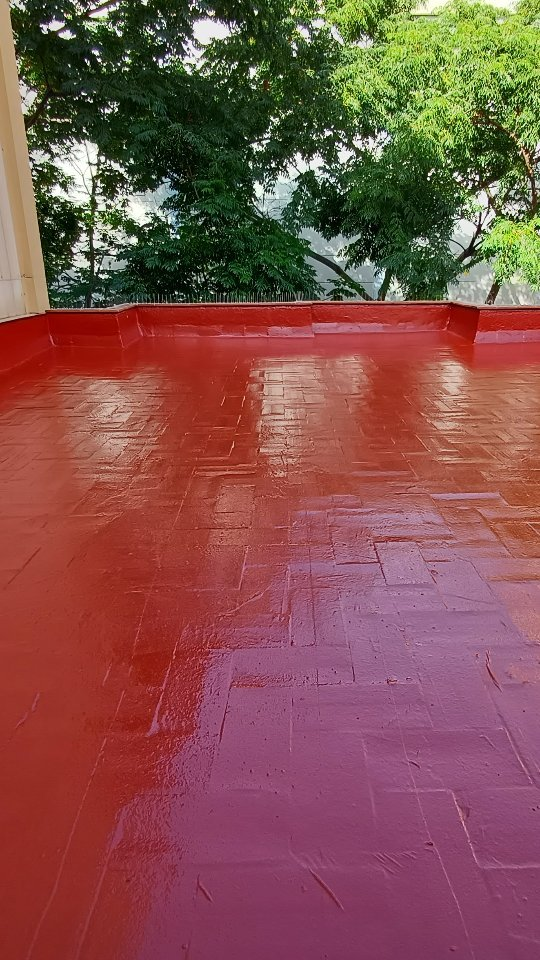

Impermeabilización de cubiertas
Terrados, terrazas y patios con tela asfáltica, butilo o pintura armada de poliuretano, según lo que pida cada superficie. Se acabaron las filtraciones al último piso.
Para comunidades y administradores de fincas
Del terrado que filtra al albañal atascado: mantenemos fincas de Barcelona con presupuestos claros que puedes llevar a la junta tal cual.
Lo que hacemos en tu finca
La finca da trabajo por arriba y por abajo. Nosotros lo cubrimos todo, sin repartir la responsabilidad entre tres gremios.
Terrados, terrazas y patios con tela asfáltica, butilo o pintura armada de poliuretano, según lo que pida cada superficie. Se acabaron las filtraciones al último piso.
Reparación de grietas y desprendimientos, pintura y saneado de fachadas y patios de luces. También actuaciones puntuales de seguridad.
Pequeñas reparaciones, repasos de albañilería y pintura de zonas comunes: la finca al día sin abrir un expediente por cada bombilla de escalera.
Sustitución de tuberías en verticales y albañales por PVC nuevo. La solución definitiva a los bajantes de fibrocemento o plomo que ya no aguantan.
Localizamos el origen del escape —que casi nunca está donde aparece la mancha— y lo reparamos, dejando el acabado como estaba.
Albañales y colectores atascados: servicio de camión cuba para desatascar y limpiar la red de saneamiento de la finca.
Si administras fincas
Detallados por partidas y explicados en lenguaje llano, listos para presentar a los propietarios sin traducción.
Una fuga o un atasco no esperan a la próxima junta. Llámanos y te decimos cuándo estamos allí — sin desaparecer después del presupuesto.
Alex Vela coordina todos los oficios: tú haces una sola llamada y del resto nos ocupamos nosotros.
Facturas claras para la contabilidad de la comunidad y documentación de los trabajos realizados.
Trabajos recientes
Vamos añadiendo fotos de las últimas actuaciones en comunidades.

Preguntas frecuentes
Sí, es una de nuestras dos líneas de trabajo. Sabemos cómo funciona una comunidad: presupuestos que se entienden en junta, plazos que se cumplen y un teléfono que se coge.
Sí. Una fuga de agua o un albañal atascado no pueden esperar: llámanos al 601 53 51 77 y te decimos en cuánto tiempo podemos estar en la finca.
Depende de la cubierta: trabajamos con tela asfáltica, butilo y pintura armada de poliuretano. En la visita te decimos cuál pide tu terrado y por qué, con el presupuesto de cada opción si hay más de una razonable.
Sí. Además de obras puntuales, hacemos mantenimiento de edificios: repasos periódicos y pequeñas reparaciones a medida que salen, para que la finca no acumule problemas.
Siempre. Factura detallada para la contabilidad de la comunidad y, cuando el trabajo lo pide, documentación de los materiales y sistemas empleados.
Cuéntanos qué pasa —terrado, fachada, bajante o albañal— y te damos presupuesto gratuito para la próxima junta.
¿Buscas una reforma para tu piso? También reformamos para particulares →